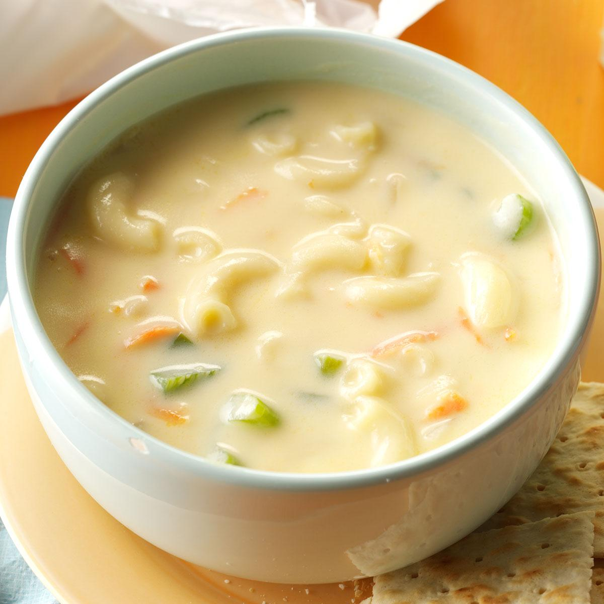

Macaroni Soup

Description
Macaroni Sopas is a rich chicken noodle soup dish that I really enjoy having during cold
weather, or even on an ordinary day — usually in the mid afternoon. I have had chicken macaroni
sopas ever since I was a kid. This soup has been my favorite; I remember having this every
afternoon as some sort of snack.
Ingredients
- 1 lb chicken skin
- 2 ounces chopped ham
- 1/2 lb elbow macaroni
- 4 stalks celery minced
- 1 medium yellow onion minced
- 1 large carrot diced
- 1 1/2 cups chopped cabbage (optional)
- 4 cups chicken broth
- 6 to 8 cups water
- 1 1/2 cup fresh milk
- 3 tablespoons butter
- salt and pepper to taste
Steps
- Bring the water to a boil.
- Add the chicken. Boil the chicken in low to medium heat for 45 minutes or until tender.
- Remove the chicken and let cool. Set-aside the water used to boil the chicken. We'll use this later.
- Once the chicken reaches room temperature, shred the meat using your hands. Discard (throw away) the bones.
- Meanwhile, heat a clean large cooking pot.
- Pour-in the butter and oil. Once the butter and oil becomes hot, sauté the onion, carrot, and celery for 3 minutes.
- Add the shredded chicken and chopped ham. Cook for 2 minutes.
- Pour-in the chicken broth and the remaining water used to boil the chicken. Stir and let boil. Simmer for 20 minutes.
- Add the elbow macaroni. Cook for 15 minutes. Add more water if needed.
- Pour-in the milk. Stir and let boil.
- Add salt and pepper to adjust the taste.
- Transfer to a serving bowl. Serve.
- Share and enjoy!